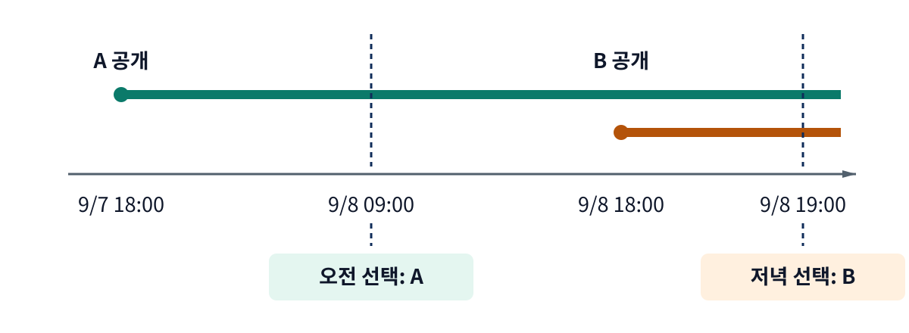
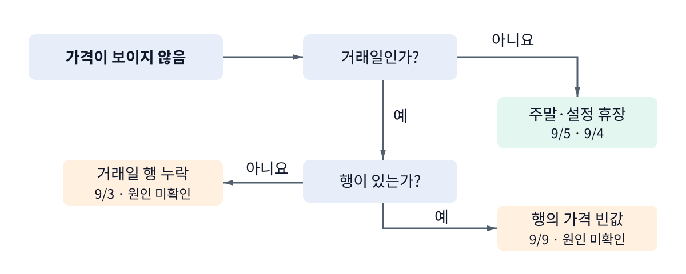
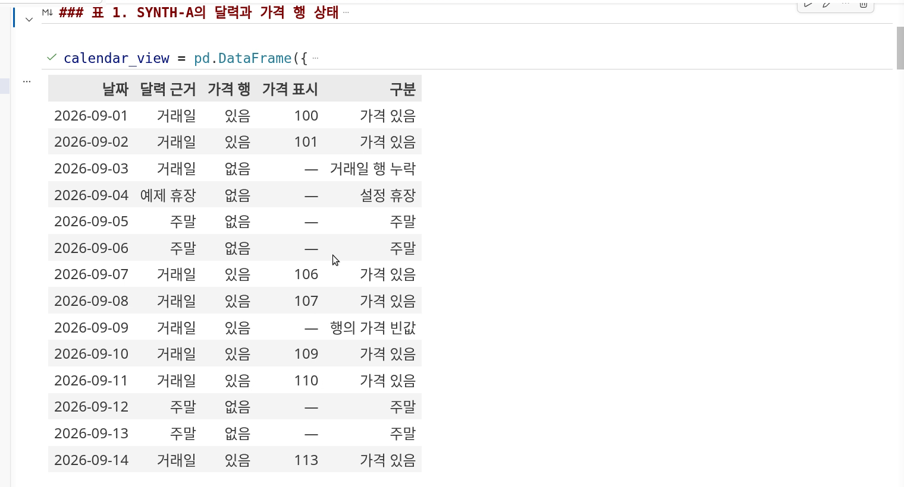
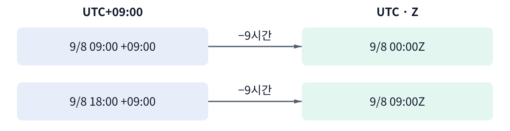
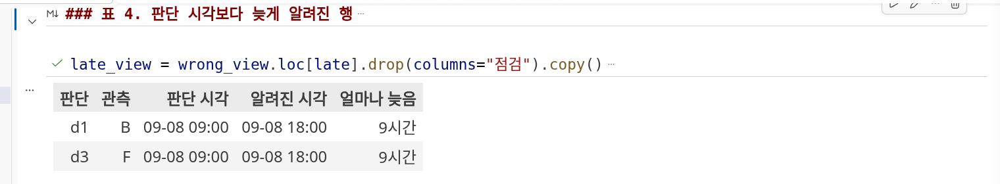
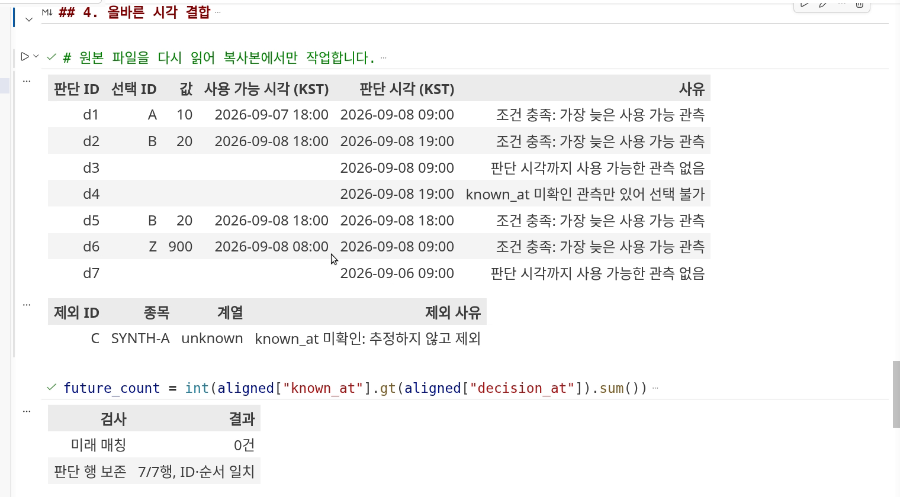
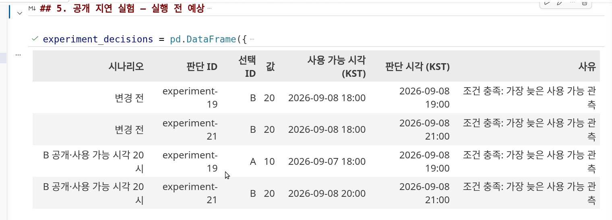

강의 상세 리포트
날짜가 같으면 합쳐도 될까? — 거래일과 공개 시각
공란의 이유를 구분하고, 판단 당시 사용할 수 있었던 값으로 자료를 연결한다
오전 판단에는 저녁에 알려진 값을 쓸 수 없다
핵심 질문 — 두 자료의 날짜가 같다면 그날의 투자 판단에 함께 써도 될까?
핵심 결론 — 판단 당시 사용할 수 있었던 값만 선택하고, 사용할 수 없거나 확인하지 못한 이유를 남긴다.
과거의 투자 판단을 다시 해 보려면 그때 알 수 있었던 자료로 입력 표를 만들어야 한다. 이번 영상의 목적은 날짜 열을 손질하는 데서 끝나지 않는다. 선택한 값과 남긴 공란을 설명할 수 있는 결과표를 만드는 것이다.
이 과정은 이후 분석·백테스트에 넘길 자료의 사용 조건을 점검한다. 앞 차시의 출처·표 점검에 이번 차시는 시간 조건을 더한다. 다음 차시의 분할·배당에 따른 가격 조정 점검까지 모아 데이터 감사표로 이어 간다. 시간을 맞췄다고 가격 계열의 의미까지 비교 가능해지는 것은 아니다.
설명은 하나의 문제를 따라간다. 오전 판단에 저녁 값이 붙는 오류를 발견하고 → 당시 사용 가능한 후보의 선택 기준을 세우고 → 에이전트가 고친 결과의 ID·행 수·공란 이유를 검증한다. 공란과 시간대는 별개 암기 항목이 아니라 이 결과를 설명하기 위해 필요한 구분이다.
앞 차시에서 주가 표의 빈값과 날짜 순서를 읽었다. 이제 그 표에 다른 자료를 붙이려고 한다. 9월 8일 오전 9시에 판단하는데, 같은 날 오후 6시에 공개된 값 B를 붙였다면 어떤 문제가 생길까? 날짜는 맞지만 당시에는 아직 알 수 없던 값이다. 나중에 받은 파일에 B가 들어 있다는 사실이 오전의 이용 가능성을 증명하지는 않는다.
이 실습에서는 실제 시장 자료 대신 작은 합성 CSV 네 개를 쓴다. 일정·종목·수치는 연습용이며 실제 거래소 휴장일이나 제공처의 공개 지연을 나타내지 않는다. 결과는 거래일의 공란을 분류한 표와, 판단 시각마다 사용할 수 있는 관측을 선택한 aligned-observations.csv다. 수익률이나 주문 체결은 계산하지 않는다.
날짜 대신 사용할 수 있었던 시각을 비교한다
A와 B는 같은 종목의 같은 종류 자료다. A는 9월 7일 오후 3시에 관측되어 오후 6시부터 사용할 수 있었다. B는 9월 8일 오후 3시에 관측되어 오후 6시부터 사용할 수 있었다. 이번 예제에서는 공개 시각과 사용 가능 시각이 같다고 입력에 명시했다.
9월 8일 오전 9시에는 A를 고른다. A는 전날 값이지만 이미 사용할 수 있었고 B는 아직 사용할 수 없다. 판단을 같은 날 오후 7시로 옮기면 B가 선택된다. 날짜가 바뀌지 않아도 판단 시각에 따라 선택이 달라진다.

이 차시의 선택 규칙은 세 단계다. 먼저 같은 종목·같은 계열의 자료로 좁힌다. 그 안에서 사용 가능 시각이 판단 시각보다 늦지 않은 관측을 남긴다. 마지막으로 남은 관측 중 사용 가능 시각이 가장 최근인 것을 고른다. 이 연습에서는 정확히 같은 시각도 허용한다. 실제 주문의 처리·체결 지연까지 이 규칙으로 검증한 것은 아니다.
여기서 최신은 모든 파일 중 가장 새 값이 아니라, 해당 판단까지 사용 가능했던 후보 중 최신이라는 뜻이다. A를 선택했다고 당일 관측을 확보한 것은 아니다. 이전 관측을 선택했다는 사실과 얼마나 오래된 값인지는 후속 판단에 남겨야 한다.
규칙을 확인할 때는 값과 공란을 함께 본다
모든 값을 공란으로 바꾸면 미래 정보를 쓴 행은 0건이 된다. 그러나 오전에 사용할 수 있었던 A까지 사라진다. 따라서 미래 매칭 수만 보지 말고 선택 ID·판단 행 수·공란 사유를 함께 확인한다. 코딩 에이전트가 “수정 완료”라고 답해도 이 대조는 학습자가 해야 한다.
행이 없는 것과 값이 빈 것은 다른 상태다
사용 가능한 후보가 없어서 결합 결과에 남긴 공란과, 입력 가격표에 원래 있던 공란은 다르다. 둘을 섞으면 올바르게 보류한 값까지 채우게 된다. 그래서 결합 결과를 해석하기 전에 입력 공란의 상태를 확인한다.
가격표에 날짜가 보이지 않을 때 곧바로 앞날의 가격으로 채우지 않는다. 먼저 달력에서 그날이 거래일인지 확인한다. 이번 달력은 9월 4일을 예제 휴장, 9월 5일을 주말로 정했다. 실제 적용에서는 해당 시장의 거래일 규칙을 별도로 확인해야 한다. 평일만 만든 날짜 목록이 거래소 달력을 대신하지 않는다. pandas의 시계열 안내는 업무일·휴일을 별도 규칙으로 다루는 방법을 설명한다.
거래일이라면 가격 행이 있는지 확인한다. 9월 3일은 거래일인데 가격표에 행 자체가 없다. 9월 9일은 날짜 행이 존재하지만 가격이 비어 있다. 둘 다 추가 확인이 필요하지만, “파일에 행이 빠졌다”와 “행의 한 값이 비었다”는 관찰을 구분해야 후속 요청도 정확해진다.

첫 요청은 이 차이를 표로 만드는 일이다. 시작 묶음의 요청-1.txt를 전달하면 에이전트가 달력의 날짜를 모두 남기고 가격표와 비교하는 노트북을 만든다. 원본은 그대로 둔다. 노트북에서 코드를 실행한 뒤 9월 3일·4일·5일·9일의 분류를 읽어 본다.

행 누락을 발견했다고 통신 장애라고 단정할 수는 없다. 가격 빈값도 거래 정지였다는 증거는 아니다. 보이는 상태와 그 원인은 별개다. 자료만으로 모르는 원인은 미확인으로 남기고, 원천 자료나 수집 기록을 확인할 다음 질문으로 적는다. 공란을 모두 채우는 것보다 어떤 공란인지 설명하는 것이 먼저다.
관측·공개·취득·판단 시각은 서로 다른 질문에 답한다
A를 남기고 B를 제외한 선택 기준을 실제 열 이름으로 바꾸어 보자. 어느 현상을 나타내는지와 언제부터 쓸 수 있었는지를 나눠야 에이전트에게 비교 조건을 정확히 요청할 수 있다. 시각 열은 비슷해 보여도 역할이 다르다. observed_at은 값이 어느 때의 현상을 나타내는지, published_at은 언제 공개됐는지, retrieved_at은 이 파일을 언제 가져왔는지 나타낸다. decision_at은 내가 정보를 사용하려는 판단 시각이다. 여기에 이번 실습은 사용 가능 시각인 known_at을 명시한다. 이는 이 예제가 정한 자료 사용 조건이며 모든 데이터 제공처의 공통 열 이름은 아니다.
| 시각 | 이 예제에서 읽는 뜻 | 대신 증명하지 못하는 것 |
|---|---|---|
| 관측 시각 | 값이 가리키는 현상의 시각 | 즉시 공개됐다는 사실 |
| 공개 시각 | 외부에 공개된 시각 | 내 시스템이 즉시 사용했다는 사실 |
| 사용 가능 시각 | 이 연습에서 사용 가능하다고 명시한 시각 | 실제 주문 체결 가능성 |
| 취득 시각 | 이 파일을 가져온 시각 | 과거에도 같은 파일을 가졌다는 사실 |
| 판단 시각 | 정보를 사용하려는 기준 시각 | 그 뒤 정보의 사용 허용 |
이번 관측표의 취득 시각은 9월 13일로 설정되어 있다. 이는 합성 입력의 일부다. 9월 13일에 가져왔다는 이유로 9월 8일 오전에 사용할 수 있었다고 판단하지 않는다. 사용 가능 시각이 비어 있는 C도 취득 시각이나 관측 시각으로 메우지 않는다. 필요한 사실을 확인하지 못했다면 선택에서 제외하고 그 ID와 이유를 보존한다.
시간대를 바꾸어도 같은 순간은 같다
+09:00은 UTC보다 9시간 앞선 표기이고 Z는 UTC 표기다. 9월 8일 09:00+09:00은 같은 날 00:00Z다. 18:00+09:00을 바꾸면 몇 시일까? 아홉 시간을 빼면 09:00Z가 된다. 다른 시간대를 문자열이나 날짜만으로 비교하면 이 관계를 놓칠 수 있다.

Python datetime 문서는 시간대 정보가 있는 시각과 없는 시각을 구분한다. 이 실습도 시간대 없는 입력을 임의로 한국 시각이라고 가정하지 않고 오류로 중단한다. 화면 표는 한국 시각으로 읽기 쉽게 표시하고 결과 CSV는 UTC로 저장한다. 표시 문자가 달라도 같은 순간인지를 변환해 확인한다.
잘못 붙은 행을 보고 수정 조건을 요청한다
입력 공란을 분류하고 비교할 시각을 정했으니, 처음의 날짜 결합 오류를 실제로 고친다. 요청에는 선택 규칙과 함께 모든 판단 행·공란 사유를 보존하라는 조건이 필요하다.
첫 노트북에는 비교를 위한 의도적 오류가 있다. 같은 종목·계열에서 관측 날짜와 판단 날짜만 맞춰 붙인다. 그러면 d1의 오전 9시 판단에 오후 6시부터 사용 가능한 B가 들어간다. d3에도 당일 오후 6시부터 사용 가능한 F가 들어간다. 두 행 모두 판단보다 9시간 늦은 정보다.

표를 본 뒤 먼저 자신의 예상과 이유를 적는다. “B는 9월 8일 값이니까 쓸 수 있다”라고 생각했다면 판단 시각과 사용 가능 시각을 같은 시간대에서 비교해 본다. 이제 어떤 조건을 고쳐야 할지 말할 수 있다.
두 번째 요청의 핵심은 다음과 같다. 전체 요청문은 요청-2.txt에 있다.
같은 종목·계열에서 사용 가능 시각이 판단 시각보다 늦지 않은 관측 중 가장 최근 값을 골라 주세요. 모든 판단 행을 남기고, 쓸 값이 없으면 공란과 사유를 기록해 주세요. 시각 미확인은 추정하지 말고 제외한 ID와 이유를 남겨 주세요. 원본 CSV는 바꾸지 마세요.
에이전트는 이 조건을 구현하고 표·검사 셀을 추가한다. 실제 제작에는 Codex CLI를 사용했으며 다른 도구에서 같은 요청을 실행했다고 검증한 것은 아니다. 학습자는 생성된 .ipynb를 VS Code에서 실행한다. 외부에서 수정된 파일이라는 안내가 나오면 최신 저장본을 다시 읽는다. 이전에 열어 둔 노트북 내용으로 덮어쓰면 수정이 사라질 수 있다.
수정 결과의 ID와 남은 공란을 함께 읽는다
에이전트의 완료 답변 뒤에 남는 학습자의 일은 결과를 설명하는 것이다. 오전의 B가 A로 바뀌었는지부터 보고, 남은 공란을 실패로 지우지 말고 이유를 읽는다.
실행 결과는 아래와 같다. 시각 조건을 고친 뒤에도 판단 7행은 모두 남았다. d1은 A, d2는 B를 고르고 d3·d4·d7은 공란이다. 미래 정보 매칭은 0건이다. 이때 공란의 의미를 읽어야 수정이 맞는지 판단할 수 있다.

| 판단 | 선택 | 읽어야 할 이유 |
|---|---|---|
| d1 · 9/8 09:00 | A | B는 아직 사용 불가. 전날 A는 사용 가능 |
| d2 · 9/8 19:00 | B | B를 18시부터 사용 가능 |
| d3 · first 계열 09:00 | 공란 | 첫 관측 F도 아직 사용 불가 |
| d4 · unknown 계열 19:00 | 공란 | C의 사용 가능 시각 미확인 |
| d5 · signal 계열 18:00 | B | 이번 규약은 같은 시각을 허용 |
| d6 · SYNTH-Z 09:00 | Z | 다른 종목의 관측을 섞지 않음 |
| d7 · 9/6 09:00 | 공란 | 이 판단까지 사용 가능한 관측 없음 |
d3의 공란을 없애려고 뒤에 공개될 F를 가져오면 처음의 오류가 되살아난다. d4를 채우려고 C의 사용 가능 시각을 만들어 넣어도 안 된다. 반대로 d1까지 공란이면 사용 가능했던 A를 놓친 것이다. 공란을 남길 이유와 값을 선택할 이유를 모두 검사해야 한다.
시각이 뒤집힌 입력이나 같은 종목·계열에서 사용 가능 시각이 충돌하는 두 값은 조용히 하나를 고르지 않는다. 노트북은 해당 입력을 오류로 중단시킨다. 잘못된 입력이 무엇인지 확인한 뒤 원천 근거로 고쳐야 한다. 검사에 맞추려고 원래 시각을 임의로 바꾸는 일과 결합 조건을 고치는 일은 다르다.
공개가 늦어져도 같은 기준을 적용한다
선택과 검증 흐름을 이해했다면 관측 날짜는 그대로 둔 채 공개를 늦춰도 같은 기준을 적용할 수 있어야 한다. 다음 예측을 먼저 적고 실행 결과로 확인한다.
B의 관측 날짜와 값은 그대로 두고 공개 시각과 사용 가능 시각을 둘 다 20시로 옮긴 복사본을 생각해 보자. 19시와 21시 판단에서 각각 어떤 ID가 선택될지 먼저 적는다. 사용할 수 있는 후보부터 판단하고, 그다음 노트북의 지연 실험 셀을 실행한다.

실행 결과에서 19시 선택은 B에서 A로 바뀌고, 21시 선택은 B로 유지됐다. 규칙을 새로 만든 것이 아니라 같은 규칙에 달라진 시각을 넣었다. 변경 뒤에도 19시에 B가 선택됐다면 결합 조건이 실제로 known_at을 사용하는지 확인한다. 모두 공란이라면 전날 A까지 지웠는지 살핀다. 공개 시각만 바꾸고 사용 가능 시각을 그대로 둔 경우에는 입력 계약부터 다시 맞춘다.
더 큰 표에서는 pandas merge_asof 문서의 backward 방식이 이런 “기준 시각 이하의 마지막 행” 선택을 구현하는 데 쓰인다. 양쪽 결합 시각의 오름차순 정렬, 종목·계열의 그룹 조건, 같은 시각 허용 여부를 따로 정해야 한다. nearest는 절대 거리로 가까운 값을 찾아 미래 쪽을 고를 수 있으므로 과거 정보만 선택한다는 조건과 같지 않다. 이번 노트북은 작은 표에서 후보를 직접 골라 원리를 확인한다.
새 문제에서 판단해 보기
독립 판단 문서에는 시간대가 다른 X·Y 선택, 사용 가능 시각이 없는 Q의 보류, 거래일의 행 누락과 가격 빈값 분류가 있다. 먼저 선택과 이유를 적은 다음 별도 해설과 비교한다. 정답 ID만 맞히기보다 어느 시각을 비교했고 무엇을 아직 모르는지 말할 수 있어야 한다.
이 차시에서 만든 시각 정렬표는 데이터 감사표의 한 부분이다. 다음 영상에서는 같은 가격 숫자가 분할·배당·가격 조정에 따라 무엇을 뜻하는지 확인한다. 시간 조건을 통과했다고 가격 계열의 의미까지 확인한 것은 아니다.
외부 1차 자료에서 확인한 내용
| 자료 | 이 리포트에서 확인한 내용 |
|---|---|
| Python datetime | 시간대 정보의 유무를 구분하고 같은 순간을 변환해 비교하는 기반 |
| pandas 시계열 안내 | 시간대 변환과 업무일·휴일 규칙의 구분 |
| pandas merge_asof | backward의 선택 방향, 정렬·그룹·같음 경계의 조건 |
실습 수치의 근거는 배포한 합성 CSV와 실제 실행 결과다. 어떤 제공처의 실제 공개 시각이나 투자 성과를 이 예제로 확인한 것은 아니다.